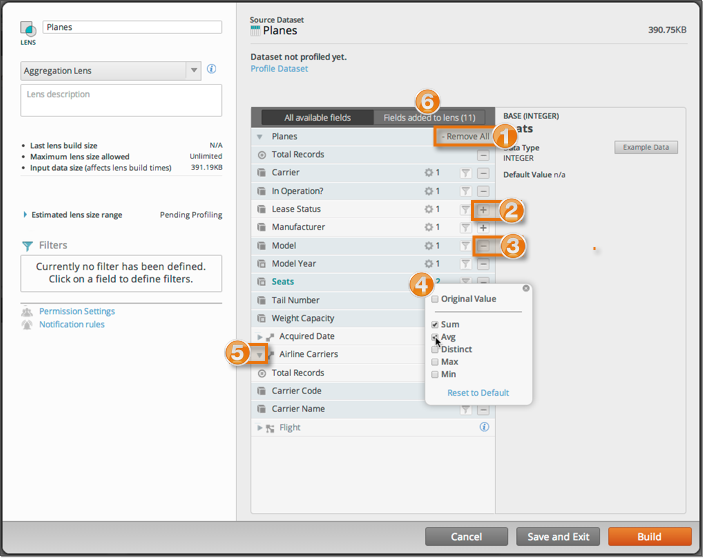

Every aggregate lens must have at least one measure field and one dimension field to
be a valid lens. Choose only the fields you need to do your analysis. You can always come
back and modify the lens later if you decide you need other fields. You can choose fields
from the currently selected dataset, as well as from any datasets it references.

- Click Add All or Remove All to
add or remove all of the fields grouped under a dataset or reference. Note
that this does not apply to nested references and events. You must select
fields from each referenced dataset independently.
- Click the plus icon to add a field to your lens. The plus sign means the field is
not in the lens.
- Click the minus icon to remove the field from your lens. The minus sign means the field
is in the lens.
- Open the quick field selector to confirm the measure
aggregations you have chosen on a field. Original
Value (the default), means the field will be included in the
lens as a dimension.
- Expand references to find additional dimension fields.
- Use the Fields added to lens tab to confirm the field
selections you have made.